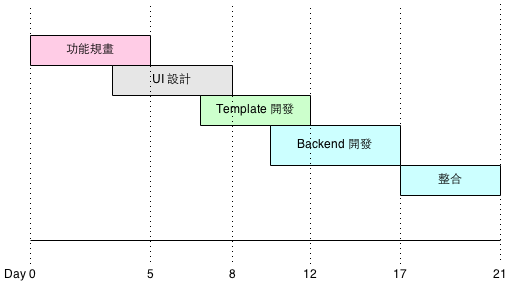

Waterfall
一般瀑布式(Waterfall) 是最常見的開發模式，開發流程是由 PM 先規劃完整的功能與細節，然後再交由 Designer 來做畫面的設計，接著交給 Frontend Engineer 開發出前端的 Templates ，也就是 HTML, CSS, JavaScript .. 等，最後由 Backend Engineer 來開發後端功能，並整合前端的 Templates。
這個開發過程可以用下面簡單的甘特圖來表示：
Scrum
另一個最近很流行的開發模式為敏捷式 Scrum， 首先我們會把專案相關的人員集合在一起，大約 5 ~ 8 個人左右，這一群成員中包含了 PM , 前後端工程師，設計師，測試人員等，並且把開發時間切分成兩週一個單位，每個單位稱之為一個 Sprint ，而每個 Sprint 都算是一個小小的 Waterfall ，其中包含了需求定義，設計，開發，測試等工作，在每個 Sprint 一開始時，要先規劃本次 Sprint 的工作內容，結束的時候要 Demo 成果，以及每個成員要分享這次 Sprint 的心得，改善方式等。
如左圖所示，開發流程會分成多個 Sprint ，每 14 天為一個週期，在每個 Sprint 結束時都會有成果發表
左圖則是每個 Sprint 要做的事。
- Planning ： Sprint 一開始 PM 會跟所有成員討論這次 Sprint 的工作項目與範圍。
- StandUp ： Sprint 當中，每天要花十分鐘讓所有成員說明重要的事。
- Demo： 跟 PM 展現這次 Sprint 的成果。
- Review：討論這次 Sprint 的優點與缺點，是否有哪些地方可以改善。
兩種開發模式都各有優缺點， Waterfall 的最主要缺點是開發時間長，一個大型專案從需求定義完成到測試結束上線，有時候甚至會超過兩年，另外 FrontEnd Engineer 開發完第一個專案後，馬上就得進入下一個專案，但這時，第一個專案還尚未結束，Backend Engineer 也還在開發與整合中，一旦有測到 Bug， FrontEnd Engineer 又得立刻下海來幫忙，變成同時處理兩個專案。；不過 Waterfall 有個最大的優點，就是分工清楚，乾淨，開發模式簡單，不用學習也知道這個開發流程。
Waterfall 優點
- 專案的架構、需求，在開工前就製定完成，細節清楚明白，工程師在開發的過程會很順暢。
- 不用花太多時間來溝通，只要需求寫得夠清楚，工程師就能很快的完成工作。
- 不用學就會的開發方式。
- 分工清楚，工作起來也比 Scrum 單純。
Waterfall 缺點
- 開發時間很長，中間沒有任何斷點，只能一直死命的做到專案結束。
- PM 能力不能太差，因為專案規劃是越完整越好，時程安排也要流暢，如果 PM 做得不好，在開發的過程中不斷修改需求，釐不清楚需求，這會卡死專案時程，工程師則是做完了又改，改了再重做，工作效率會變得很差。
- 同 Team 的成員沒辦法同時開發，同時結束，有些成員會同時處理多個專案，例如設計師完成第一個專案的設計後，會馬上接著做第二個專案，若這時第一個專案要補頁面，Icon 等等需求，會造成設計師得分心來同時兼顧兩個專案。
- 越底層的人員，越沒有發言權，因為你接到的工作，都是高層討論完的結果，你唯一要做的就是盡快完成它。
Scrum 優點
- 專案分階段完成，完成一小部分就立刻推出產品，產品可以快速上線。
- Scrum 可以解決這種需求不明確，或是功能變動幅度大的專案， Scrum 本來就是訴求邊做邊設計，一步一步完成，完成的部分就可以先上線。
- PM 不用很專業，需求不用說得很清楚，因為每個 Sprint 都會大家一起討論功能，Scrum 這個開發模式，很適合用在團隊中的 PM 沒什麼經驗 ，因為沒有經驗的 PM 無法製定出完整清楚的需求，這時就可以透過 Scrum 的精神，在 Sprint 當中，每個成員都能夠對該專案提出建議並確定功能。
- 團隊內的成員都有機會發表意見，工程師可以提出對 UI 的看法，設計師也可以提出需求的意見。
- Scrum 可以解決這種需求不明確，或是功能變動幅度大的專案， Scrum 本來就是訴求邊做邊想，一步一步完成，完成的部分就可以先上線，所以很適合還沒有完整規劃的專案，或是不懂得規劃的團隊。
- 團隊內同時存在不同領域的人才，很方便討論各種跨領域的需求，例如前後端工程師，可以一起討論如何開發一個新 Feature ， QA 與 RD 也能一起討論測試的方式與工具，有些大公司分工太細，各領域人才沒有良好的溝通管道，這時一個聚集各方面人才的 Scrum Team ，可以加快溝通的時效性。
Scrum 缺點
- Scrum 精神不容易在傳統公司中實作出來，每一個階段完成的工作，根本就上不了線，因為大部分的老闆都希望專案做得很完整，一推出就大受好評，不願意做一半的產品就推出去。
- 需求變動大，程式改動的幅度也很大，所以不適合一開始就寫太完整的 Unit Test，而在未來也很難找到機會回來補 Unit Test 。
- 花太多時間在開會， Review，影響工作情緒，每天早上都會花十分鐘快速說明有什麼狀況，根據經驗常常都會超過十分鐘(個人建議可以直接取消每天的 Stand Up)。
- Scrum 模式有點夢想化，實際上根本就做不太到。
我覺得 Scrum 開發模式可以讓團隊中的每一個成員，「一起開始，一起結束」，這是非常好的想法，每個人的工作目標是一致的，進度也是一致的，成員的向心力遠大於 Waterfall 開發方式，但是成員的能力跟 scrum 的運作有很大的關系，例如 PM 只能參與規劃，設計，測試，當專案進度已經到的程式撰寫，那麼 PM 會沒有事情做，同樣的狀況也會發生在設計師，所以 Scrum 開發比較適合團隊內每一個成員能力相似，例如 Backend Engineer 都是 Full Stack Engineer ， PM 本身也懂得寫技術文件，能夠幫忙寫 Library or API Document ，設計師也要懂得 Front-End 的開發或是自動化測試工具，而且每個人要願意去學一點不同領域的知識，如果團隊的成員編制沒辦法達成能力一致，那 Scrum 的開發最後還是會變成 Waterfall，這就一點意義也沒有了。